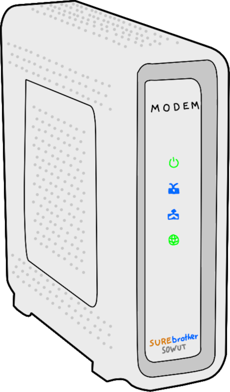
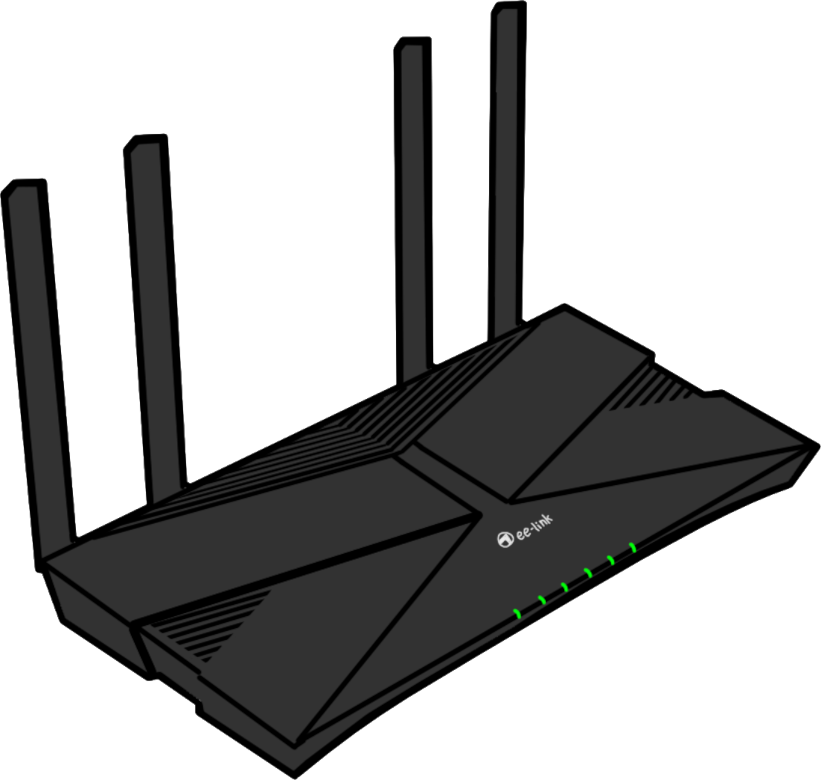
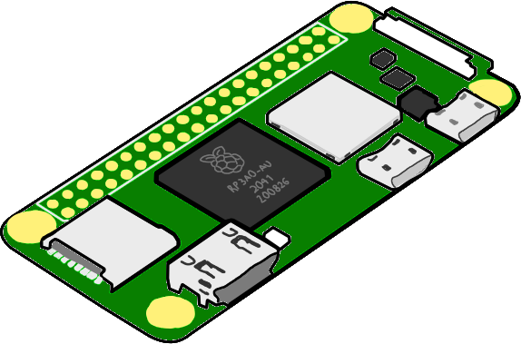

How I do a Home Network

It starts by ditching the box our ISP gave us. A plug-and-play modem-router is well and good for general usability, but this comes at the cost of configurability and data sovereignty. Compared to jury-rigging a rented device to meet my household's particular needs, it made far more sense to install our own modem. An inexpensive DOCSIS 3.0 modem from the local electronics retailer takes full advantage of our data plan and paid for itself in a matter of months.

Since our home is relatively small, it makes sense to consolidate routing and wireless access into one device. We've had great results with an affordable router and its built-in dipole antennae. WPA-3 security is easily configured, as are settings for DHCP reservation and DNS service that we need for the single-board computer below.

That is, a Raspberry Pi Zero 2 W that I use for auxilliary services. It runs an instance of Pi-Hole that acts as the DNS resolver for internal clients, the principal effect of which is network-wide ad-blocking. I cannot overstate how much this improves our browsing experience at home, especially since we can trivially create exceptions for the very rare edge cases in which the DNS sinkhole effect is undesirable.
Beyond ad-blocking, having a Linux machine with a reserved IP address has various other utilities. The Zero 2 W, while not especially powerful for a single-board computer, is more than capable of running WireGuard to give us remote access to the network while we're away. This necessitates a dynamic DNS service on the router, which, luckily, is supported out of the box. On top of that, enough resources are left over to run an rsyslog server to which I log automated backups and various other important metrics.